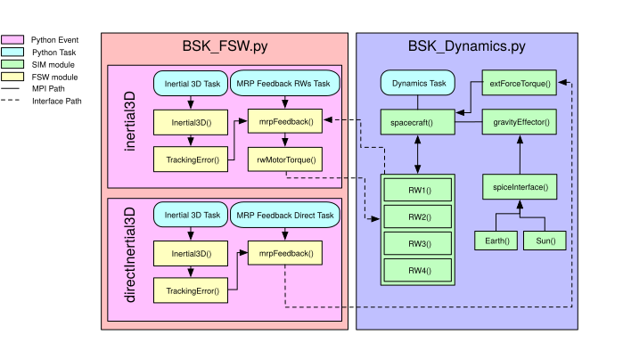
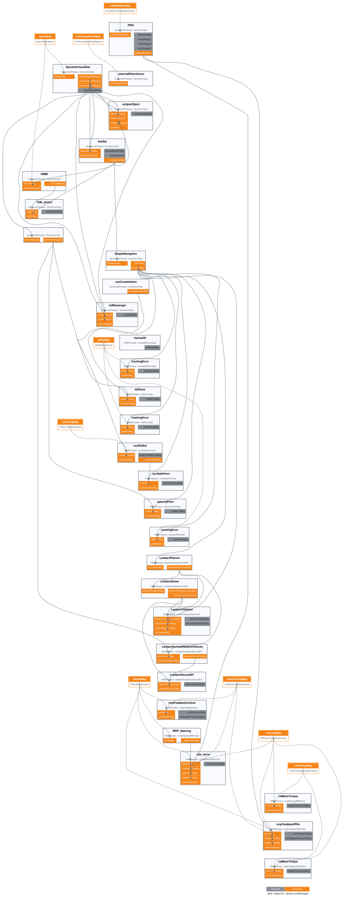
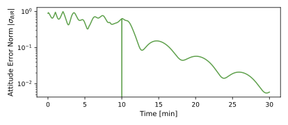
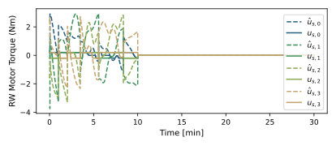
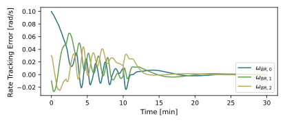
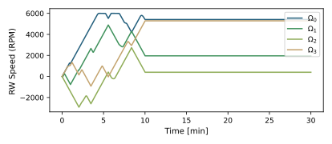

2. scenario_FeedbackRW
2.1. Overview
This script sets up a 6-DOF spacecraft orbiting Earth. The goal of the scenario is to
add reaction wheels to BSK_Dynamics, and
establish a inertial pointing FSW mode in BSK_Fsw.
The script is found in the folder basilisk/examples/BskSim/scenarios and executed by using:
python3 scenario_FeedbackRW.py
The simulation mimics the basic simulation in the earlier tutorial in scenarioAttitudeFeedbackRW. The simulation layout is shown in the following illustration.

The optional message flow diagram below shows how module input and output messages are connected,
including the stand-alone BSK gateway and configuration messages supplied through extraMessages.
Recorder modules are hidden so the diagram focuses on the regular BSK modules.

Two simulation processes are created: one which contains dynamics modules, and one that contains the FSW modules. The initial setup for the simulation closely models that of scenario_BasicOrbit.
2.2. Custom Dynamics Configurations Instructions
In addition to the modules used in scenario_BasicOrbit, the user must configure the RW module
in BSK_Dynamics
to stabilize the tumbling. This is accomplished by first creating the RW state effector.
The RW object is then configured through InitAllDynObjects(SimBase) which
includes the SetReactionWheelDynEffector()
function which configures the RW pyramid’s properties and messages.
2.3. Custom FSW Configurations Instructions
To configure the desired C Module: inertial3D FSW mode the user must declare the following modules
within the __init__() function in BSK_Fsw.
These provide the initial setup for an attitude guidance system that makes use of an inertial pointing model, a module
that tracks the error of the spacecraft’s MRP parameters against the pointing model, and a module that takes that
information to provide a torque to correct for the error.
Following the initial declaration of these configuration modules, BSK_Fsw
calls a InitAllFSWObjects() command,
which, like BSK_Dynamics’s InitAllDynObjects(), calls additional setter functions that configure each
of the FSW modules with the appropriate information and message names.
In addition to the modules used for attitude guidance, there are also two setter functions that send vehicle and RW
configuration messages that are linked into the attitude guidance modules called SetVehicleConfiguration() and
SetRWConfigMsg().
After each configuration module has been properly initialized with various message names, FSW tasks are generated.
The two tasks required for the C Module: inertial3D mode are inertial3DPointTask and mrpFeedbackRWsTask.
Note how the tasks are divided between the pointing model and control loop. These modular tasks allow
for simple FSW reconfigurations should the user want to use a different pointing model, but to use the same feedback
control loop. This will be seen and discussed in later scenarios.
Because the FSW guidance and control are broken up into separate tasks to be enabled, they must share a common
stand-along (gateway) message to connect these tasks. These are setup with the method setupGatewayMsgs().
Note that if a C FSW module re-directs its message writing to such a stand-alone message, when recording
the message this stand-alone message should be recorded. The output message payload within the module itself
remain zero in such a case.
Finally, the C Module: inertial3D mode call in scenario_FeedbackRW needs to be triggered by:
SimBase.createNewEvent("initiateInertial3D", self.processTasksTimeStep, True,
conditionFunction=lambda self: self.modeRequest == "inertial3D",
actionFunction=lambda self: (
self.fswProc.disableAllTasks(),
self.FSWModels.zeroGateWayMsgs(),
self.enableTask("inertial3DPointTask"),
self.enableTask("mrpFeedbackRWsTask"),
)
)
which disables any existing tasks, zero’s all the stand-alone gateway messages and enables the inertial pointing task and RW feedback task. This concludes how to construct a preconfigured FSW mode that will be available for any future scenario that uses the BSK_Sim architecture.
This simulation runs for 10 minutes and then switches the FSW mode to directInertial3D. The difference here
is that the requested command torque from the mrpFeedback module in this mode is directly sent to the
spacecraft object as an external torque. Also, not that while in inertial3D mode the mrpFeedback module
receives the RW speeds to feed-forward compensate for them, in the directInertial3D mode this is not the case.
2.4. Illustration of Simulation Results
showPlots = True




- scenario_FeedbackRW.run(showPlots)[source]
The scenarios can be run with the followings setups parameters:
- Parameters:
showPlots (bool) – Determines if the script should display plots